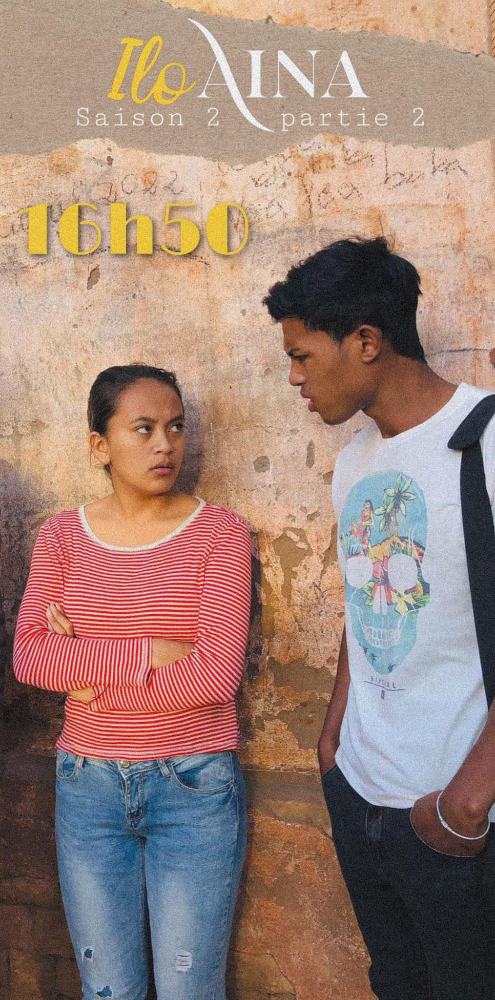
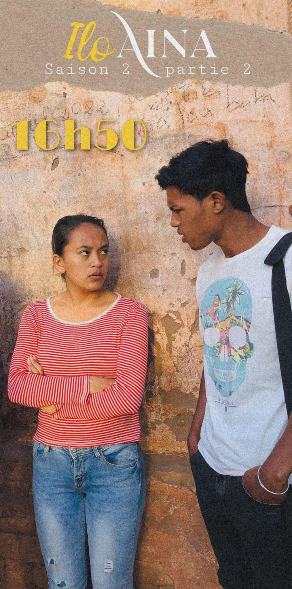

Créons ensemble des histoires qui marquent
Vous souhaitez donner vie à votre histoire ? Ça commence par votre idée… et un peu de mon aide.

Qui suis-je ?
Hello ! Je m’appelle Karine. Je suis prête-plume en freelance ainsi que correctrice basée à Madagascar. Mais je suis également une passionnée de littérature et de cinéma. J’adorerais vous accompagner dans votre prochain projet. Un livre, un film, une série — vous choisissez! Le processus de création d’une bonne histoire me fascine : de la construction de l’univers, passant par la création des personnages et l’élaboration de l’intrigue… Mais au fil de mes expériences professionnelles, j’ai découvert une autre passion : celle d’aider et accompagner les autres à donner vie à leurs idées. J’ai constaté que faire de la création un travail d’équipe ne pouvait qu’en améliorer le résultat.
Je crois sincèrement que les histoires sont des outils puissants, capables de toucher et d’impacter la vie des gens. C’est pourquoi l’écriture doit être faite avec soin. Et c’est justement là que j’interviens : pour vous aider à donner forme à votre vision personnelle.
Qu’est-ce que je peux faire pour vous ?
01
Écriture créative
Si vous avez une idée de pour un livre, un film ou un article de blog, je peux être ta plume.
02
Story editing
Si vous voulez de l’aide pour l’écriture de votre œuvre, je peux être votre développeur narratif et/ou votre beta reader.
03
Assistanat
Si vous avez besoin d’un bras droit pour votre production audiovisuelle, je peux être votre assistante.
Qu’est-ce que j’ai fait avant ?


 

Projets collaboratifs
Voici les projets sur lesquels j’ai travaillé avec ou pour d’autres personnes par le passé.
Projets personnels
J’ai également réalisé quelques projets personnels. Vous pouvez en lire des extraits pour vous familiariser avec mon style d’écriture.